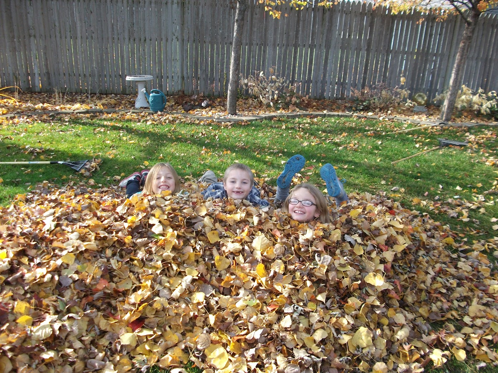

I am a very nostalgic person, and from what I can tell, most of Gen Z is. In fact,
a coworker once told me that our generation is nostalgic for things we did not
even live through.
But one thing I have lived through was Flash Games. My siblings and I almost
exclusively used that computer for playing flash games. And let me tell you, the wackier the game, the better
in most cases. So when you are going through the site, remember the children you are judging are pictured below.
Overall, our most used website was onemorelevel.com, which I just learned
is still technically alive! Although you can't actually
do much on it since the death of flash player (may she rest in peace).
All that being said, I couldn't rebuild the entire website, but wanted to capture some
of our most played games here almost as a time capsule to the 2000s for my siblings and I.
I hope the nostalgia also hits you on So Many Levels.
